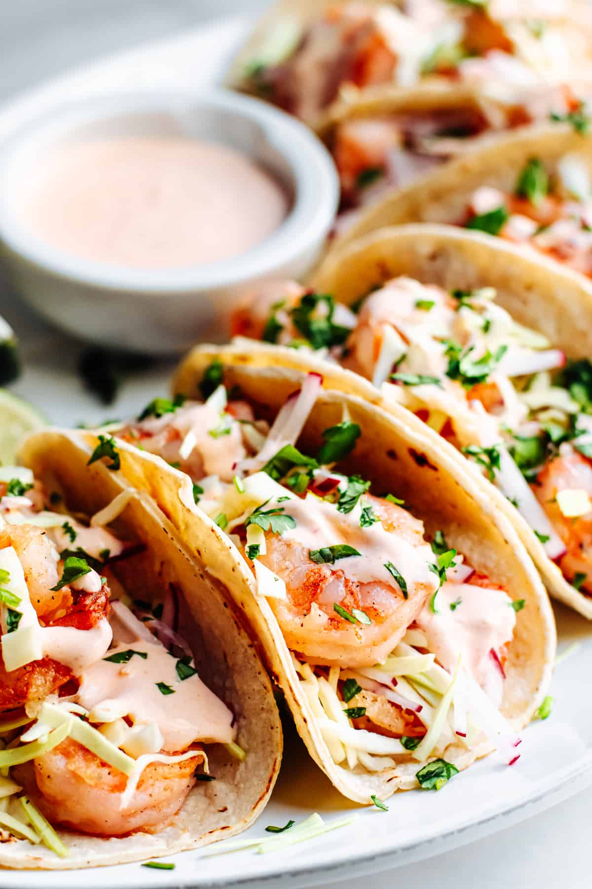

- 8 corn tortillas
- 1 pound shrimp peeled and deveined
- 2 tablespoons cornstarch
- ¼ cup avocado oil or other high heat oil
- 1 teaspoon minced garlic
- ½ teaspoon freshly ground black pepper
- ½ teaspoon kosher salt
- 1 cup finely chopped cabbage
- ½ cup finely chopped radishes
- ½ cup finely chopped cilantro optional
- 1 lime cut into wedges
- jalapeño peppers thinly sliced, optional
|  |
|